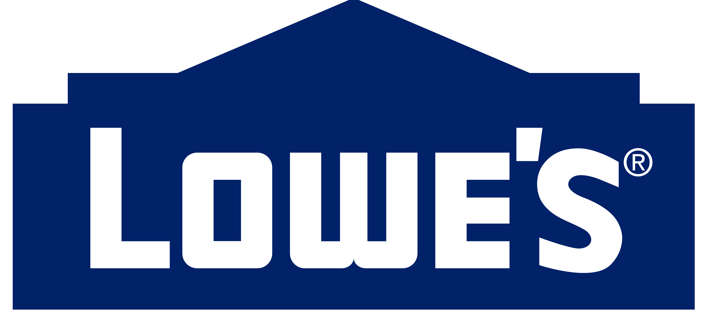
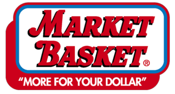

Location: Beverly, MA
Position: Intern
Time Period: June 2023 - August 2023
Surveyed a suitable hydropower site, modeled pre- and post-construction river flows, created a program using Python to automate the process, developed control schema for a hydropower plant, and wrote a request for proposal to build a control system. This was to study and codify how a system will behave under conditions at a specific site. This involved studying the flow dynamics of waterways where plants are under consideration, and optimization and regulation of the damping and control of the operation. Learned how to use Excel.
Location: Epping, NH
Position: Receiver/Stocker
Time Period: June 2021 - Present
Managed a list of products requiring restock, cleaned and organized shelves, provided customer service, learned and followed unloading procedures which included general products to cleaning and chemical spill cleanup/removal, worked with a team of 3-6 individuals on a daily basis to maintain a timely and efficient unloading process of delivery trucks, and helped customers find the products they were looking for.
Location: Epping, NH
Position: Grocery Clerk
Time Period: June 2021 - Present
Managed a list of products requiring restock, cleaned and organized shelves, provided customer service daily, learned standard cleanup procedures for chemical and non chemical spills, worked with a team of 10-20 individuals on a daily basis to maintain a friendly work environment that kept shelves stocked, clean, and helped customers find the products they were looking for.